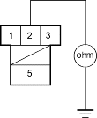

- Shift the shift lever to
 position while pushing the shift lock release.
position while pushing the shift lock release. - Check for continuity between the No. 2 terminal of the interlock relay connector and body ground when the shift lever is in position and when the shift lever out of to
 ,
,  , or
, or  position.
position.
INTERLOCK RELAY CONNECTOR

Wire side of female terminals
Is there continuity when the shift lever in position and no continuity when the shift lever in D.gif, , or position?
YES - Check for loose terminal fit in the interlock control unit connector. If necessary, substitute a known-good interlock control unit and recheck. 
NO - Repair open in position wire between the No. 2 terminal of the interlock relay connector and the shift position switch.